生成时间：2026-10-19T11:33:35+08:00
今日保留论文数：15
内容构成：今日新文 15 篇；补充推荐 0 篇；经典旧文精读 0 篇
阅读分层：重点精读 2 篇；相关简报 13 篇。精读依据科学贡献筛选，简报保留方法、结论及局限。
数据源警告
- 本次有 7 个数据源访问异常；完整错误已保留在运行日志中，日报只显示摘要。
- arXiv API：2 个分类访问异常，候选池可能不完整；程序会基于已成功获取的数据继续兜底。
- 期刊 RSS：5 个 feed 访问异常，主要影响 Nature/Science 等补充来源，不影响 arXiv 主流程继续生成。
- 主要错误类型：回退旧缓存，最新条目未确认 5 次；超时 2 次。
高能天体物理重点
1. Foreground dependence of the 20 GeV Galactic halo gamma-ray excess and its proposed connection to the LUX-ZEPLIN event
- 来源：arXiv / astro-ph.HE
- 链接：https://arxiv.org/abs/2610.23713
- 作者：Kevork N. Abazajian, Youyou Li, Oscar Macias
- 公告 / 来源日期：2026-10-19
- 阅读层级：重点精读
- 评分：novelty 9/10，importance 8/10，relevance 10/10，final 10.00/10
- 推荐理由：十五年LAT与281前景配置直接检验20GeV晕残差空间一致性及LZ关联，系统误差证据具体，是重点精读候选。
中文题目：20 GeV 银河晕超出仍在，但平滑暗物质解释经不起前景与方位检验
做了什么：银河高纬约20 GeV的额外伽马射线曾被解释为暗物质湮灭，并与 LUX-ZEPLIN（LZ）一个高能核反冲事件联系。本文用15年 Fermi-LAT 数据先复现这一结果，再系统改变银河弥散辐射、Fermi 气泡、Loop I 和 eROSITA 气泡模板，并在更细空间网格上折叠仪器响应。与 Navarro–Frenk–White（NFW）暗物质晕形状相关的正残余没有普遍消失：在传统气泡范围之外，若干方案仍给出约4–16σ的名义显著性。
但“有一个形似晕的残余”与“整个残余来自暗物质”是两项不同命题。谱形、幅度随前景改变，天空不同分区无法共享同一个 NFW 归一化；纯前景失配模拟也能制造同量级的假晕。与 LZ 联系所用的420 GeV、W玻色子对末态谱，在部分前景下可接受、另一些下被排斥。因此论文削弱的是完整平滑晕解释和跨实验共同起源主张，并未排除残余中存在较小暗物质成分。
为什么重要：暗物质搜寻中，一个模板加入后大幅改善拟合，往往容易被读成新粒子证据。本文把谱形、空间归一化一致性、前景灵活度和数据派生模板偏差分别检验，显示很高的条件显著性仍可能来自模型错误。它将争论从“有没有超出”推进到“超出是否满足同一个物理源模型的多项约束”，也保留了尚未被前景模型完全解释的窄谱特征。
理论 / 观测 / 仪器方法价值：可复用的是完整的注入—回收与失配检验：生成模拟天空后，必须重新构造由残差得到的气泡模板，而不能把真实数据上固定好的模板直接拿来拟合模拟。再将共同归一化与独立分区归一化比较，能检验一个全局源模型是否只是吸收局部失配。对 Fermi 弥散分析、扩展源和中微子空间模板搜索，这比单看总TS更接近物理鉴别。
为什么应该关注：本结果直接关系到高能银河弥散辐射和暗物质解释的可信范围。下一步应优先取得原生 eROSITA 东半球图、改善气泡边界和亚结构、处理点源长期变化，并检验残余中较小的暗物质成分。LZ核反冲与伽马谱的质量尺度相近，只提供待检验的动机；没有联合实验似然与一致的粒子模型，不能把两处弱点拼成强发现。
展开详细解读：文章讲解、背景、理论、重点章节、图表与相关工作
文章详细讲解
科学问题。 如果额外辐射来自平滑暗物质晕中的同一种粒子湮灭，其天空形状由暗物质密度平方的视线积分决定，各区域除该空间权重外应共享同一谱归一化。作者问的不是某个固定前景下能否找到正系数，而是这一空间与能谱约束在合理前景变化后是否成立。20 GeV指光子谱特征所在能区，不是直接测得的粒子质量。
作者怎么做。 作者分析2008年8月至2023年8月的 Pass 8 ULTRACLEAN 光子，选取银经绝对值不超过60度、银纬绝对值10–60度的区域，以避开最复杂的银盘。281种弥散配置覆盖宇宙线传播与气体分解差异；三种主要气泡模板分别取平坦、带结构和由残差派生的形状。再加入Loop I及eROSITA的不同描述，逐能段用泊松似然拟合，检验小像素、气泡遮罩和空间分区。
关键结果。 精细空间分箱下，正的NFW相关成分相当持久，但前景选择能改变幅度和谱形；更有说服力的反例来自形态：即使某种eROSITA处理让普通四象限暂时相容，将分区旋转45度后仍不相容。亚结构气泡能显著改善整体拟合，却仍不能使所有方向共享单一晕归一化。因此“加入晕模板有用”不足以证明“平滑晕就是残余的全部来源”。
局限和下一步。 作者没有构造一个能同时解释所有残余特征的确定前景，也没有排除每一种非球对称暗物质分布。模拟中的前景失配可产生宽的假成分，但没有重现全部12–21 GeV窄结构。应把结果作为对完整平滑NFW解释的压力测试，继续改进气泡、源变动和仪器系统误差，并允许多成分共存，而不是在“全是暗物质”与“完全没有暗物质”之间二选一。
关键结果是怎么做出来的
第一步先建立可对照的数据与基线。九个能段覆盖1.16–130 GeV，中心约1.5、2.6、4.3、7.3、12.3、20.8、35、59及100 GeV；主要检验使用较高的六个能段。基线复现约20.8 GeV的正超出，证明后续差异来自分析选择而非简单抓错数据。模型折叠点扩散函数，数据本身不平滑；残差气泡已包含模糊，不能再重复卷积。
第二步改变空间分辨率和前景表示。10度大像素中，平坦改为带结构气泡可把某些基线的NFW计数由约5006降到1575；但2度和1度网格会恢复正成分，所以不能只展示最粗分箱便宣称超出消失。在固定模板下从2度到1度的变化通常远小于更换前景的影响：几类方案差约1–12%，而前景带来约1.4–2.1倍差别。这个比较将离散化误差和建模误差分开。
第三步把最显眼的气泡区域遮掉。传统气泡外仍保留约52.5%的NFW视线权重，多个前景给出4–16σ名义超出；采用扩大的亚结构边界又去掉86个像素、约13.8%的相应权重后，范围降到1–7σ。遮罩不是简单增加或减少曝光，而是在移走可能被气泡泄漏污染的区域；剩余显著性仍以所选前景为条件，不能当成独立发现概率。
第四步检验天空一致性。20.8 GeV的四分区拟合显示，公共系数往往无法描述各方向。将eROSITA气泡细分为12个亮度加权区域后，部分标准分区的一致性提高，但45度旋转分区仍失败。分区比较比只检查总通量更严格，因为真正的平滑晕不能为了每个方向另调湮灭截面。对分区扫描作者采用模拟校准，200次模拟零超越也只能给有限的尾概率上界，不能无限外推σ。
第五步检验分析自身能否造出信号。在无晕但前景不匹配的模拟里，可得到约3300或4700个假NFW计数，与数据成分同量级；匹配模型时则接近零。对注入信号重新制作残差气泡，20.8 GeV附近可回收约93%，但构造模板的4.3 GeV能段只回收约42%；若固定模板会误以为回收接近100%。这直接解释了为什么数据派生模板能改变推断的谱形。
最后才讨论粒子解释。420 GeV的W玻色子对末态在部分配置下有可接受的谱拟合概率，在另一些下失败；拟合截面还随一气体或五气体环分解而变。它没有提供稳健的全局共同起源证据。论文没有把LZ反冲信息放进联合似然，因此这里的谱相容性只是一项必要条件，既不是跨实验确认，也不能自动恢复前面失败的空间一致性。
展开背景、理论、公式、模型和章节导读
背景知识
银河高能伽马射线的主要背景来自普通宇宙线：质子撞击星际气体产生中性π介子，电子通过制动辐射和逆康普顿散射发光。气体分布、宇宙线注入与传播、星际辐射场都不完全已知。它们不是一个均匀噪声底，而是与暗物质模板部分重叠的结构，因此少量形状错误可被另一个宽模板吸收。
Fermi气泡是伸出银心两侧的大尺度高能结构，Loop I和eROSITA气泡又在投影上重叠。平坦模板只描述平均边界，带结构模板允许内部亮度变化，而残差模板从扣除其他模型后的数据建立。第三种方法能捕捉未知结构，也可能把待搜索信号一起写进前景；这正是为何模拟要重走制作模板的全过程。
NFW描述常用的暗物质密度分布。若粒子自身湮灭，两个粒子相遇的速率与密度平方成正比，中心方向更亮，但同一粒子质量和截面不应因天空象限而变。排除平滑NFW解释并不等于排除任何暗物质：实际晕可能偏离这一模型，且观测残余也可能是暗物质和未建模天体辐射的混合。
LZ通过探测核反冲寻找暗物质，与Fermi观测终态伽马射线的物理过程不同。将一个反冲事件的可能质量尺度与一个伽马谱峰联系，需要同时考虑散射截面、湮灭通道、局部密度及两个实验的统计选择。质量尺度相容不是独立证据相乘的许可；本文专门检查伽马一侧的稳定性，未完成整个联合粒子模型检验。
基础理论 / 方法脉络
模板拟合把每个像素的预期光子数写成多个空间模板之和，每个能段允许它们改变幅度。仪器响应决定一个真实天区会向邻近像素贡献多少计数，所以应折叠模型后再与原始计数比较。若直接平滑数据或对已模糊模板再次卷积，像素之间的统计关系和相对形状都会改变，进而影响细分区的判断。
泊松似然适合离散计数。前景幅度属于干扰参数：关心晕系数时，其他参数仍应重新优化，这称为剖面似然。谱诊断有时允许晕系数取负，以显示模型过度预测，但负系数没有负暗物质密度的物理意义。检验正信号时则施加非负边界，零假设在参数空间边缘，普通卡方近似需相应修改。
“显著性”在这里回答的是固定模板族内是否需要附加正成分。它没有自动把所有未考虑的前景错误包括进去，也没有把尝试多种模板与分区的机会成本算成全局粒子发现概率。跨281种配置的中位数和百分位描述分析选择敏感性，各配置使用同一批光子，不能当作281次独立实验的统计置信区间。
物理可检验性还要求共同参数同时解释能谱和形态。单一NFW归一化与四区域独立归一化是可比较的嵌套模型；不同前景家族通常不是嵌套模型，不能把它们的似然差机械换成σ。作者用BIC约束增加空间自由度的收益，并用模拟评估分区最大统计量；这些步骤分别处理模型复杂度和搜索机会，不能互相替代。
公式与推导
下面沿论文的建模与检验链条整理方程；计数表达式采用统一记号，属于对原文分析的教学重写，不额外引入新数据拟合。
先指定密度模型：
这里取尺度半径21 kpc、太阳银心距8 kpc，并由局部密度0.42 GeV每立方厘米固定归一化。它给出三维物质分布，尚不是天空图；下一步要沿视线积分，并平方密度以计算双粒子湮灭权重。
该量的单位可写为 GeV平方每五次方厘米，决定不同方向的相对亮度。固定粒子末态时，微分光子强度为
这是自共轭粒子常用约定；粒子质量、截面与末态产额决定谱，J决定形状。改局部密度会重标度推断截面，却不自动改变同一计数模板拟合的好坏。
将强度积分到能段并折叠曝光、点扩散函数，可得到模板计数H。用e标记能段、p标记像素、j标记前景，预期计数写为
其中a和η是待拟合的无量纲幅度，模板已带计数单位。每段独立a允许先检查谱形，而不强迫数据符合预先指定的暗物质末态。
n为实际光子数。对给定a优化所有η得到剖面似然，因而晕误差包含同一模板族内的归一化退化；它不包含模板形状本身未知的全部系统误差。
正信号检验与有符号谱估计必须分开：
在固定模板、正则干扰参数和适当渐近条件下，多能段统计量具有边界混合分布
这里p表示密度而非最终尾概率；积分右尾再转成σ。原文采用双侧正态等效约定，不能不加说明与其他文献单侧“发现σ”相混，更不能将其视为已校正全部前景选择的全局显著性。
空间一致性则使用另一统计量：
每能段多出3个区域幅度自由度；若先比较多个分区再挑最大值，必须对该选择过程校准。它检验的是同一物理归一化，而非要求四区原始计数相同，后者本来会因J和曝光而不同。
为了防止仅靠多加参数改善前景，作者还检查
N为所用能段和空间单元数量，Δk为新增参数数目。收益需抵偿复杂度，并在大多数配置中成立。BIC不是发现概率；这条链最终要回到注入回收、前景失配和形态诊断，才能判断“显著正残余”是否足以承载粒子解释。
模型拟合 / 应用方法
输入数据采用严格光子事件类和统一区域。点源使用4FGL-DR4聚合模板、逐能段调节总归一化，扩展源另作遮罩；目录覆盖年限和15年数据并不完全一致，且未允许每个点源独立长期变化。这类未建模变化会残留在宽模板中，是应继续处理的具体系统来源。
前景配置分为气体、逆康普顿、气泡等不同层次。作者先在固定配置中剖面优化系数，再比较281种配置，而非把它们并成一个等权概率先验。增添eROSITA分区时，以BIC收益和多数配置一致改善约束模型选择；将结构加得更细不能自动被读成“真前景已找到”。
能谱检验把逐段自由系数与固定暗物质质量及末态、仅调一个总幅度的方案比较。一个固定谱通过只是说明该前景下尚可相容，不恢复其空间失败；不同前景给出不同可接受性，恰好是结论。拟合截面也应与所采用的J归一化一并报告，不能脱离密度约定比较数字。
模拟分为匹配模型、前景失配和信号注入三类，分别回答统计校准、模型错误能造多大假信号、分析能回收多少真信号。对数据派生气泡必须重建模板，才能包含“把信号吸收到背景”的泄漏。有限模拟次数尤其限制极端尾部：200次零超越对应95%尾概率上界约1.5%，不支持任意高σ的经验宣称。
原文还尝试非球对称的银河类比晕，但仅六个模拟银河、216个视向，不能覆盖所有暗物质形态。最稳健的推断是：在已测试的合理前景族里，整个超出尚不能由一个平滑NFW谱与归一化统一说明；而一个较小、隐藏在前景不确定性中的分量仍需专门约束。
重点章节 / 结果段落怎么读
- 数据与基线部分：先确认区域、九个能段及响应折叠，弄清粗分箱复现与细分箱检验为何并列，避免只抓最弱或最强一组结果。
- 气泡、Loop I及eROSITA变化：读各模板怎样构建、哪些来自数据残差，再看加入空间自由度的模型选择标准。
- 空间分区部分及图5：将共同归一化与独立系数逐一比较，尤其留意旋转45度后的失败；这比全区单个TS更直接约束平滑晕。
- 失配模拟和注入回收及图2：分别追踪无信号假阳性与有信号被吸收，不能把两种模拟混成“已证明全部超出是前景”。
- LZ谱连接及附录的统计校准：核对420 GeV末态只在部分前景可接受，并区分有限模拟尾概率、谱误差带和跨配置变化。
关键图表与解读
图2
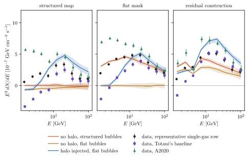
图注：在2度像素中拟合、并已折叠仪器响应的NFW能谱，从左至右分别采用带结构、平坦和残差派生的Fermi气泡模板。当生成模拟与拟合采用不同气泡描述时，无晕模拟也可产生宽的、类似气泡谱的假NFW成分；这些例子不能重现数据在带结构模板下保留的12–21 GeV特征。逐次重新构造残差模板也会在无晕天空产生明显表观NFW辐射，并压低4.3 GeV模板构造能段的回收成分。黑圆、紫方和绿三角分别为代表性单气体配置、Totani基线和A2020的数据结果，误差为68%剖面区间。实线及色带表示50个模拟天空的中位数与16–84%范围：红色是在带结构气泡上无晕，橙色是在平坦气泡上无晕，蓝色是在平坦气泡上注入经验Totani能谱。
怎么看这张图：先比较同一列的数据点和无晕模拟带，再横向比较三种气泡处理。模拟假信号可达数据幅度，却没有重现全部窄谱峰；蓝色注入回收在模板构造能段受压低，说明模板制作会改变谱形。色带是模拟分布，不是数据点的统计误差，也不是281种前景的置信区间。 支持正文关键证据，并与同版本原图和图注核对。
来源与置信度：arXiv HTML；source verified；https://arxiv.org/html/2610.23713v1/oscar_spectra_vs_sims_2026-09-29_psfuc.svg
图5
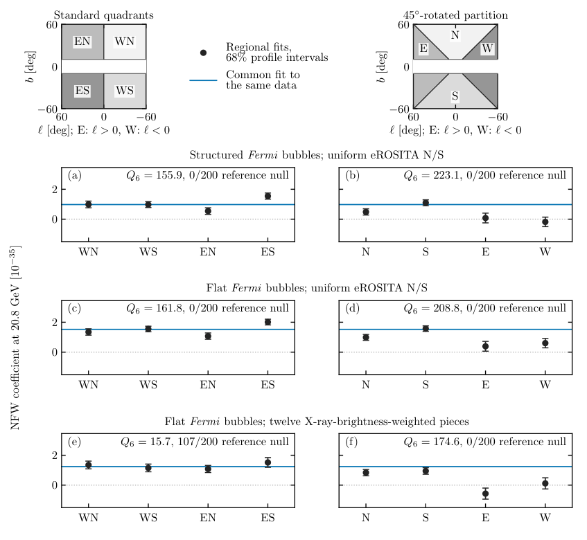
图注：在20.8 GeV、2度像素、Totani基线弥散模型的单气体分解下，独立拟合四个天区的NFW系数。左列是标准象限，右列旋转45度；上方绘出分区，白色为排除的银盘，E、W分别指银经大于零和小于零。三行依次采用带结构气泡加均匀南北eROSITA模板、平坦气泡加均匀南北eROSITA模板、以及平坦气泡加12个X射线亮度加权eROSITA片区。只有最后一种的标准象限与共同归一化相容，而旋转分区在每行都不支持共同值。黑实圆及误差条是区域系数和68%剖面似然区间，蓝实线是同一数据拟合的共同系数，灰点线表示零。所绘系数属于20.8 GeV能段；标出的Q6则累加5.6–130 GeV区域拟合的改善。各面板还标出200个参考零假设模拟中超过其Q6的次数，校准范围见原文§V.2。系数单位为十的负35次方 cm³ s⁻¹ GeV⁻² MeV⁻¹ sr⁻¹。
怎么看这张图：同一物理晕应让四个已按空间模板加权的系数相容，而不是要求原始计数相同。重点看第三行：普通象限看似改善，旋转后仍失败，说明结论不能依赖一种分区。图内Q6跨六能段，勿与单个20.8 GeV误差条混用；200次模拟的分辨能力也不足以无限外推尾部显著性。 支持正文关键证据，并与同版本原图和图注核对。
来源与置信度：arXiv HTML；source verified；https://arxiv.org/html/2610.23713v1/regional_nfw_normalizations.png
强相关工作
直接争论对象是 Totani 的银河晕超出分析（2507.07209）及后续前景讨论（2610.10695）。本文增加了响应处理、空间分辨率、多个气泡结构和分区一致性检验。应沿“同一数据、不同前景假设”理解分歧，而非把两套分析当成独立观测互相投票。LZ事件工作（2609.02823）及共同解释提议（2609.02868）则提供跨实验动机，本文没有完成它们的联合拟合。
基础联系包括 Fermi 气泡的观测建模（1407.7905）和剖面似然渐近检验（1007.1727）。已有银河晕暗物质搜索（1804.04132）同样强调弥散前景。可复用关键词是 diffuse-template mismatch、residual-derived bubbles、signal injection and recovery；方法迁移时须重新检查能段、事件选择和模板与数据的重叠，不能直接套用本文的σ数值。
同一事件 / 同类源线索：
相似工作：
基础理论 / 方法工作：
相反观点 / 张力线索：
2. Exploring Cosmic Rays from Gravity-Limited Acceleration at Supermassive Black Holes
- 来源：arXiv / astro-ph.HE
- 链接：https://arxiv.org/abs/2610.23393
- 作者：Elena Manao, Elisa Resconi, Frank M. Rieger, Paolo Padovani, Gia Dvali
- 公告 / 来源日期：2026-10-19
- 阅读层级：重点精读
- 评分：novelty 8/10，importance 8/10，relevance 9/10，final 9.35/10
- 推荐理由：引力磁场上限、曲率损失与逃逸透明度共同限定SMBH宇宙线加速窗口；关联仅局部弱超额，须全文核查物理极限。
中文题目：超大质量黑洞能加速超高能宇宙线吗？理论窗口尚未变成源关联
做了什么：作者从黑洞附近磁场不应超过引力约束的能量量级出发，估算旋转超大质量黑洞作为超高能宇宙线加速器的极限，再加入曲率辐射损失、低吸积流光子场和粒子逃逸条件。形式上的磁场上限很高，实际吸积可维持的场则低得多；在低吸积、低光深的特定参数窗口内，磁层电场仍可能把质子或重核推到超高能。
观测部分使用直接测得黑洞质量的103个近邻系统，其中90个处于 Pierre Auger 天文台视场，并与2635个能量至少32 EeV的宇宙线方向比较。扫描三类源与1–30度角尺度后，最强局部概率约0.005，但校正搜索机会后全局概率约0.1。本文提供的是可行性框架和没有显著关联的检验，尚不能确认宁静黑洞或活动星系核就是这些宇宙线的来源。
为什么重要：磁层电压很大并不保证可见的超高能粒子：场要有电流维持，电荷过多会屏蔽加速电场，光子太多又会吸收粒子或使原子核解体。本文把这些相互牵制的条件放在同一问题里，并用现有方向数据检查。它的价值在于明确哪里是物理允许区、哪里仍缺动力学和统计证据，而不是再给一个脱离环境的最高能量数字。
理论 / 观测 / 仪器方法价值：可以迁移的是“供能—损失—透明度—到达方向”的逐层检验。先由旋转和磁场计算电势，再比较曲率损失与几何上限，随后用吸积流光子密度检查逃逸，最后按仪器曝光和已知大尺度各向异性生成空样本。对黑洞缝隙、AGN中微子和超高能宇宙线建模，这能防止把各自成立条件不同的最乐观上限拼成一个现实源。
为什么应该关注：若黑洞磁层确实贡献超高能粒子，其可见性应随吸积率、磁场维持能力和核组成共同变化，而不能仅按黑洞质量排序。值得继续关注的是具有可测低吸积流、磁场或喷流信息的个体，以及能量和电荷相关的方向检验。当前宽角尺度的Centaurus超出可同时投影到多种源目录，需要更严格的源权重、传播和独立样本来分辨。
展开详细解读：文章讲解、背景、理论、重点章节、图表与相关工作
文章详细讲解
科学问题。 宇宙线能量达到十的19至20次方电子伏后，普通加速器必须同时提供足够大的电场尺度和足够低的损失率。超大质量黑洞尺寸大、自转可供能，是自然候选；但“黑洞很大”不等于磁层一定有可工作的电势差。作者希望建立宽泛的理论界限，并考察观测上有质量测量的黑洞群体是否在超高能到达方向上留下痕迹。
作者怎么做。 理论先比较磁能密度与引力束缚量级，得到随黑洞质量反比变化的形式磁场上限；再以辐射低效吸积流估算光子密度、能量均分磁场和碰撞平均自由程。将电加速与曲率辐射平衡，得到损失限制能量，并与有限尺度电压取较低者。观测则按是否存在近期吸积活动迹象分组，对Auger事件作多角尺度计数及模拟校准。
关键结果。 极限磁场允许的形式能量非常高，但它不能在低供料的真实磁层中自动实现。采用远低于该上限的场，仍有一些可达到超高能且较透明的区域。与此同时，最强合并样本超出在约24度、局部概率0.0051；扫描90个相关假设后，全局概率升到约0.1，数据没有确认目录关联，也不能分出活动与宁静源谁贡献更多。
局限和下一步。 加速缝隙的维持、粒子注入和真实场曲率尚未由自洽动力学求出；目录也不是体积完备的黑洞样本，所谓宁静不等于每个源都测得低于指定吸积率。未来需联合质量、吸积率、磁场、距离及核组成建立有权重的预测，再检验能量相关角偏转。单纯增加目录对象或挑选最显著角尺度不能弥补这些缺口。
关键结果是怎么做出来的
首先用黑洞尺度建立量纲边界。将特征半径取为Schwarzschild半径时，引力可支持的磁场量级随质量的倒数降低；十亿太阳质量黑洞约为十的10次方高斯。这个数比常见吸积环境的估计高很多，它只是排除更极端配置的形式界限，而不是作者测量或模拟出的稳态磁场。
第二步加入实际供料约束。辐射低效吸积流的光度近似随无量纲吸积率平方变化，所以低吸积率能够降低光子密度，增加高能粒子逃逸机会。但磁场能量均分值也随吸积率平方根降低，且无等离子体电流维持的磁场会衰减。因此可工作的区域位于“足够强的磁场”和“足够稀的辐射背景”之间，不是吸积率越低越好。
第三步比较两个能量上限。几何电势限制随电荷和磁场尺寸积增长，曲率辐射限制则依赖粒子质量、电荷和磁力线曲率半径。固定磁场为引力上限的某一比例、曲率半径随黑洞尺寸增长时，损失限制能量随黑洞质量四分之一次方变化；若改为吸积能量均分场，这个标度就不同。图1必须沿同一假设读，不能把其不同分支拼接成普遍规律。
第四步检查核与光子相互作用。低吸积流给出的平均自由程可与黑洞尺度比较，用于判断光子碰撞和核光致解离是否过强。这里使用特征光子能量和截面的量级估算，真实阈值依赖粒子Lorentz因子及光谱，不能因为两类峰值截面相近就断言它们在所有能量有相同光深。理论没有产生可直接和Auger通量拟合的完整组成谱。
第五步构造目录统计。103个有直接质量测量的系统分为49个活动源、54个宁静源，Auger视场内对应41和49个。2635个事件覆盖2004–2020年、阈值32 EeV；模拟空样本保留曝光和已测大尺度偶极，因此不是简单在球面均匀撒点。直接测质量的选择偏向可分辨黑洞影响半径的系统，目录位置与距离选择会影响解释。
最后对扫描付出统计代价。合并、活动、宁静目录分别在约24、22、20度出现较强局部超出，五个超过局部2σ的对象又集中在Centaurus方向，不能算五次独立确认。对全部角尺度和三类目录取最小概率，并在三万余次伪实验中重做同一搜索，得到约10%的全局尾概率；注入模拟也显示不同源类别可产生类似超出，故分类归因尚不成立。
展开背景、理论、公式、模型和章节导读
背景知识
超高能宇宙线是到达地球的极高能带电粒子，包括质子和较重原子核。它们在磁场中偏转，方向不一定指回加速源；传播中的相互作用还会改变能量和核组成。寻找源时，必须把加速、逃逸、传播及探测器曝光分开，不能用一张天区重合图代替整个物理过程。
旋转黑洞周围的磁场可把自转能传给外部等离子体。在大部分有足够电荷的区域，平行磁场的电场被屏蔽；少数缺电荷的缝隙才可能保留加速电势。但缝隙出现和持续受电流闭合、成对产生及外部供料制约。一个力自由稳态抽能公式和一个严重缺电荷的加速缝隙，不应不加检查地同时假设达到各自最大效率。
辐射低效吸积流将较多能量随气体带入黑洞，光子产额比明亮薄盘低，因此常被考虑为高能粒子的透明环境。它并不意味着没有磁场或没有物质；相反，场仍要靠有限供料和电流支持。磁场强度和光子密度共同依赖吸积状态，使理论上限与可实现参数存在明显距离。
黑洞质量来自恒星或气体动力学等直接测量，建立了比纯光度代理更明确的质量尺度，但测量容易程度本身带来选择效应。目录中的“活动”依据多波段近期吸积迹象分类，“宁静”只是没有相应显著迹象，并非所有对象都具有严格的相同吸积率上限。将两类的角关联差别解释成加速机制差别，必须先处理这一不对称性。
基础理论 / 方法脉络
引力与磁场的比较是能量量级估算，不是一个精确的广义相对论稳态解。磁压力越大，越需要外部应力或引力维持；把特征半径取成黑洞尺度得到一种极宽松上限。它说明某个场“未被量纲排除”，并不说明吸积盘能供给该磁通，也不保证黑洞周围能保持这种几何结构。
电势限制强调加速区长度：即使没有辐射损失，电荷沿有限长度可获得的能量也有限。曲率损失强调轨迹弯曲：粒子沿弯曲磁力线运动时辐射，Lorentz因子越高损失越快。两者取小值才是该简化模型允许的最大能量；仅用磁场与尺寸的乘积会遗漏强损失区。
重核的质量和电荷同时进入损失平衡，所以其最大总能量可以高于质子。然而重核还会被背景光子打碎，是否最终以重核逃逸取决于光谱、路径及反应阈值。本文的透明度条件只是必要检查，不能替代包含光致解离链和次级粒子的输运计算。
方向关联的空假设必须与实际天空选择相符。Auger在不同赤纬的曝光不同，宇宙线又已有大尺度偶极；目录附近的事件数因此不能直接与全空平均比较。先计算每个角尺度的局部尾概率，再在模拟中重做选最小值的过程，才能回答“搜索这么多方案后出现同样超出的机会有多大”。这一全局概率仍不是某个物理源模型的后验概率。
公式与推导
以下沿原文量级推导统一记号；省略的数量级常数不应用来推断精确上限，最后两式是对目录检验的教学记号整理。
黑洞的特征尺度为
M为黑洞质量，G为引力常数，c为光速。把磁能密度与尺度R上的引力束缚能密度比较，得到
右式保留量级而非精确系数。质量变大使引力允许的磁场上限降低，但尺寸同时增大，所以下一步的最大电势不按同一比例降低。
用a表示无量纲自转效率、Ze为粒子电荷，有限加速长度给出
它在形式磁场上限处与质量无关。对质子可到约十的27次方eV的形式量级，远高于观测，但这不是现实可达能量；必须加入实际磁场与损失。
辐射低效流的示意关系是
M9以十亿太阳质量为单位，吸积率采用论文的Eddington归一化。若光子代表能量为εγ，半径以Schwarzschild尺度写为R帽，则原文估计
这来自光度除以球面面积、光速和单光子能量。把一个宽谱压缩成代表能量只用于量级判断；反应阈值附近应恢复完整光谱。
磁场供给同时受到吸积能量限制：
当吸积率为万分之一，典型场约千高斯，远小于前面的引力形式上限。低光子密度有利于逃逸，却也降低供场能力，故不能把最低光深与最大引力场当作同一个自然稳态。
沿曲率半径Rc的磁力线运动时，电加速与曲率损失平衡为
m是粒子静质量，E等于γmc平方。重核总能量受质量四次方和电荷共同影响；在固定B占Bmax比例且Rc随M变化时才有E随M四分之一次方的标度。
取截面约十的负25次方平方厘米，可估计是否透明；但不同反应的截面和阈值不同。这个能量条件加光深条件仍只是必要条件，还缺粒子注入、缝隙维持和绝对通量。
观测部分对类别c、角半径θ统计目录邻域事件数，并定义
空样本按曝光及已知偶极生成。三个类别乘30个角尺度形成90个相关假设，不能简单把局部p当最终结果，也不能把90当成独立试验次数机械相乘。
每次伪实验完整重做扫描，自动包含相关搜索机会。局部约0.005只在固定目录和角尺度下显得较小；全局约0.1表明本数据尚不足以确认关联。作者的局部与全局σ表述应连同各自约定阅读，直接报告p更不易混淆。
模型拟合 / 应用方法
理论图不是对单个黑洞观测能谱的拟合，而是对质量、磁场及吸积状态的参数扫描。原文把自转、场曲率和代表光子能量作为模型输入，比较几何能量、曲率限制和透明度；应先确认每条线的固定量。尤其不能把固定B/Bmax的质量标度误读为固定吸积能量均分条件下的普遍结果。
吸积模型用简化的辐射低效流关系连接光度、光子数密度与磁场，低吸积率阈值约万分之一用于选出透明环境。真实磁通可受磁阻塞吸积限制，低供料甚至使电流无法维持磁层。本文没有通过辐射磁流体或粒子动力学模拟证明整个允许区域都能建立持续加速器，图中的存在窗口应据此解释。
观测输入为固定事件阈值和可测质量目录，按三类目录扫描角尺度；模拟含曝光与大尺度偶极，且Centaurus附近的背景仍可能略有覆盖不足。宽角窗口彼此重叠，同一个事件也可接近多个对象。最小概率分布比单个局部曲线更适合概括结果，原文把两个最小p之比称为LR的地方不应误读成通常意义的似然比。
作者还注入约200–500个事件检查不同源类是否可产生现有超出，结果表明活动与宁静样本难以区分。该检验说明目前统计量缺乏分类能力，不是测得了真实源事件数量。没有绝对注入谱、组成与传播权重的联合拟合，也无法据此反演这些黑洞贡献的宇宙线功率。
更有判别力的后续拟合需先固定物理权重，再在独立数据中检验能量与角尺度的关联，并把核电荷和银河/河外磁场引起的偏转纳入。目录不完备与活动分类误差应进入选择模型；只有在这些条件下，黑洞质量依赖、吸积状态和方向超出才能形成可被否证的统一预测。
重点章节 / 结果段落怎么读
- 引力磁场界限：核对半径取黑洞尺度的量级假设，区分形式天花板与吸积可提供的场，不要从最大数字直接跳到真实加速能力。
- 吸积与透明度部分：对照光子密度、能量均分磁场和碰撞长度，看到降低吸积率同时带来的好处与代价。
- 图1及曲率损失推导：每次沿同一固定参数假设比较几何界限与损失界限，明确重核的总能量优势还受光致解离限制。
- 源目录与Auger搜索：核对103到90的视场筛选、活动分类、2635个事件及三类乘30角尺度的扫描。
- 补充图S2的试验校准与注入检验：从最小局部p走到约0.1全局p，再看为什么不同源类可给出相似超出。
关键图表与解读
图1
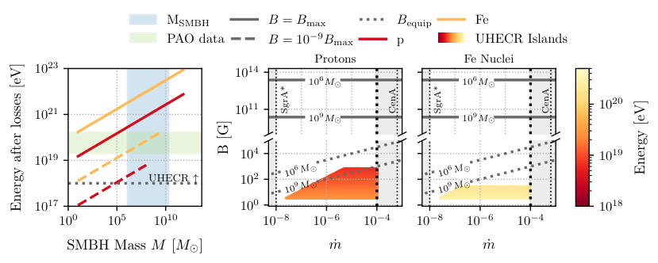
图注：左：在不同磁场强度和自转参数约1时，质子（红）与铁核（橙）的曲率限制能量随超大质量黑洞质量变化。蓝带标出本文黑洞质量范围，绿带标出所分析超高能宇宙线的能量范围。曲线只延伸到几何能量上限（式9）大于曲率限制（式13）的区域，因此较低磁场、相应较大质量处达到的最高能量更低。中、右：宁静星系中视界尺度加速的允许参数区，即“超高能宇宙线岛”，覆盖本文样本质量范围，并要求磁场与能量均分论证可达到的场相容；代表计算取B为Bmax的十亿分之一。颜色表示粒子能量：质子最高约3×10¹⁹ eV（较暗色），铁核可达10²⁰ eV量级（较浅色）。实线为Bmax（式2），点线为两个代表质量的能量均分场（式5）。竖点线从左至右为Sgr A*的估计吸积率约10⁻⁸、环境被视为透明的约10⁻⁴界限，以及Cen A约10⁻³的吸积率；前者作极稀薄盘的参照，后者是迄今较有希望的AGN候选。
怎么看这张图：先看左图曲线何处因几何电压不够而终止，再看中右图同时满足供场和透明度的交集。固定B/Bmax才产生文中的质量标度，不能把形式引力上限当成实际磁场。铁核能到更高总能量仍不代表它能保持组成逃逸；图中的允许区也没有包含完整缝隙动力学或绝对宇宙线通量。 支持正文关键证据，并与同版本原图和图注核对。
来源与置信度：arXiv HTML；source verified；https://arxiv.org/html/2610.23393v1/fig1_fig2_combined.png
图S2
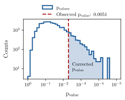
图注：所有伪实验中，对全部被检验情形取最小p值后得到的分布。红色虚线表示真实数据中观测到的最小p值，阴影区域表示对多处寻找效应（look-elsewhere effect）校正后的p值。
怎么看这张图：此图应和主文局部角尺度曲线一起读。每个伪实验也允许选择最有利目录和角尺度，因此阴影面积才对应完整搜索的全局概率，约为0.1。局部最小p约0.005并非独立源发现；几个目录对象集中在同一Centaurus区域也不能累加成多次独立确认。 支持正文关键证据，并与同版本原图和图注核对。
来源与置信度：arXiv HTML；source verified；https://arxiv.org/html/2610.23393v1/trial_correction.svg
强相关工作
辐射低效吸积流的基础可沿1401.0586理解，电动力学加速界限可对照astro-ph/0202229。本文将这些条件组织成一个黑洞质量与环境窗口，但没有替代更细的磁层计算；1712.04203所讨论的磁层加速问题是检验电荷屏蔽与间隙维持的重要背景。与这些工作的联系是条件兼容性，而不是几条最高能量公式可以无条件叠加。
场的维持与衰减可对照2109.14620，这是“黑洞有自转就能永远加速”这一直觉必须补上的环节。作为多信使参照，2211.09972的NGC1068中微子结果说明AGN环境值得研究，但明亮、光学厚的中微子产生区与本文要求宇宙线透明逃逸的低吸积窗口并非同一参数区。引用这种观测只用于说明环境诊断的重要性，不能把它当作本文黑洞目录关联的独立证实。
同一事件 / 同类源线索：
相似工作：
基础理论 / 方法工作：
相反观点 / 张力线索：
相关简报
1. Gamma-ray calorimetry of Seyfert winds
- 来源：arXiv / astro-ph.HE
- 链接：https://arxiv.org/abs/2610.23028
- 作者：Alberto Domínguez
- 公告 / 来源日期：2026-10-19
- 阅读层级：相关简报
- 评分：novelty 7/10，importance 7/10，relevance 9/10，final 8.70/10
- 推荐理由：同口径整合Seyfert风机械功率及GeV堆叠，明确量热效率退化；没有新增LAT数据分析，属于可用约束而非发现。
中文题目：Seyfert 风为何不是高效伽马射线量热器
问题、方法与结论：作者没有重新分析 Fermi 数据，而把已发表的快速风、硬 X 射线选源及低光度活动星系叠加结果统一到 0.1–100 GeV。以机械功率中 10% 加速质子为基准，完全质子碰撞量热对应约 2.5% 的伽马转化率；Seyfert 风实际达到该基准的 0.020，68% 区间为 0.009–0.038，星暴超风为 0.26。两类中位数相差约 13.5 倍，但这是依赖风动能估计的群体比较。
意义与贡献：它把“供能不足”和“粒子没有充分损失能量”分开：LINER 电离外流主要缺功率，Seyfert 风可能有功率却缺驻留时间或靶物质。两种 Seyfert 叠加的 Eddington 归一化输出比为 1.75，但95%区间宽达0.26–24，不能据此确认风与日冕同源。
可借鉴之处：可借鉴的是统一能段、保留共享加速参数的相关误差，再用单源上限检查群体平均效率是否能套给每个源。NGC 7582 的平均效率预测超过其上限约2.3倍，提示必须同时考虑风功率误差和源间离散，不能直接当成密度差异的测量。
局限与关注点：风动能有0.6–1.7 dex不确定性；全部取最小允许功率时，两类差异可消失。密度只是给定激波半径与速度后的自洽值，和逃逸方式退化。NGC 4151 关联仍有混淆；TeV 通量是跨两数量级的谱外推，不能作为已验证的 CTAO 预测。
图2
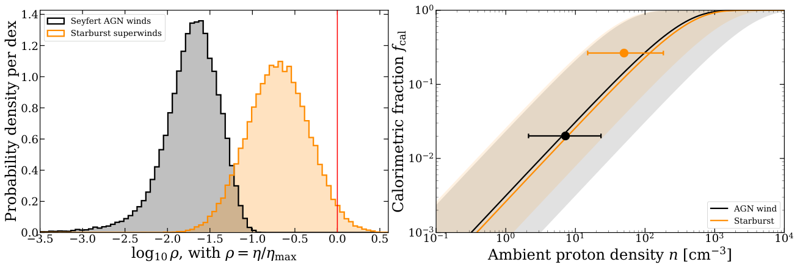
图注：左：Seyfert活动星系风与星暴超风的量热比ρ=η/ηmax的蒙特卡洛后验，包含两者共享的ηmax不确定性，竖点线标出中位数。右：式4的质子量热分数随环境密度变化，实线为各类基准几何，阴影覆盖所探索半径R与激波速度的全部范围。带误差条的点表示复现观测ρ所需的密度。两条曲线按构造几乎重合：两类采用相似半径与激波速度，因此ρ的差别直接映射为密度差别，而非几何差别。
怎么看这张图：左图比较的是共享加速参数下的群体效率，右图则额外加入半径和速度假设。密度不是独立测量，不能把阴影当成由伽马数据单独给出的唯一环境约束。 直接裁切已核对的期刊/预印本PDF原图，保留所有面板与坐标。
来源与置信度：original PDF crop；source verified；https://arxiv.org/pdf/2610.23028v1#page=7
2. What can a uniform reflection pipeline establish about supermassive black hole spin? An audit and a corrected analysis of 57 AGN with XMM and NuSTAR
- 来源：arXiv / astro-ph.HE
- 链接：https://arxiv.org/abs/2610.23081
- 作者：K. Balasubramaniam, H.-K. Chang, Ł. Stawarz
- 公告 / 来源日期：2026-10-19
- 阅读层级：相关简报
- 评分：novelty 7/10，importance 8/10，relevance 8/10，final 8.70/10
- 推荐理由：背景与时段配对审计后仅18源通过质量检查，检验自旋约束对倾角与能段的依赖，方法价值强。
中文题目：统一反射谱拟合能可靠测出多少活动星系黑洞自旋？
问题、方法与结论：这项单历元审计从57个活动星系出发，发现旧流程在 EPIC-pn 小窗口模式下把背景区放到有效窗口外；重新提取并按曝光、计数、堆积和近同时性筛选后，有41个观测对合格。作者以多起点优化和双向自旋剖面扫描重新拟合；24个可用谱中18个通过基准拟合，其中只有1个得到双侧自旋区间，其余包括单侧界、断开的允许区和无约束结果。
意义与贡献：关键进展是把仪器提取错误、优化未收敛和物理模型不足区分开。通过基准拟合不等于自旋可靠：18个中10个倾角超过75度，且只有2个受约束对象同时经受住较低倾角限制和去掉软能段的检查。它质疑统一流程的可迁移性，而非否定全部精细个例测量。
可借鉴之处：可复用流程包括先修复背景与响应，再固定筛选标准、多起点寻找全局低谷，并展示完整允许集合而非只给最优值及对称误差。160次同模型模拟的名义90%区间覆盖率约82%，加宽粗自旋网格后接近92%，显示数值网格也能影响区间解释。
局限与关注点：样本不是通量或体积完备，单历元和固定盘密度、发射率及内边界限制了物理适用性。模拟只校准所设模型内部，不能覆盖真实吸收、软过剩和盘结构误差；因此本文不能建立总体自旋分布或自旋—喷流关系。
图3
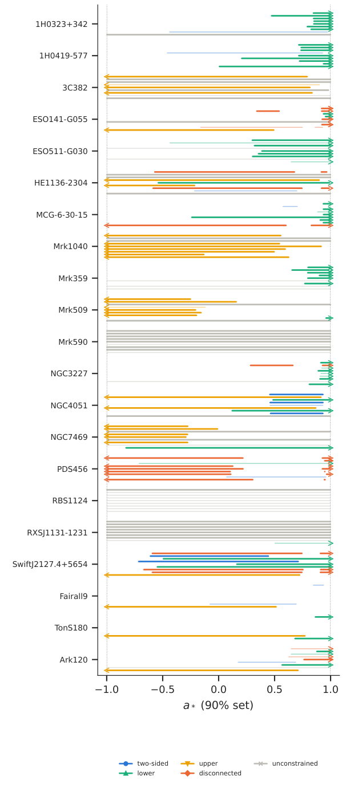
图注：主要分析源以及Fairall 9、Ton S180、Ark 120在参考模型与八种变化下的自旋允许集合。每个源内各行依次为参考、q、内半径、盘密度、电离度、暖康普顿化、交叉定标、倾角不超过60度、pn能段不低于3 keV。浅色线段表示未达到主要结果质量标准或带标记的拟合；箭头表示允许集合到达网格边界。
怎么看这张图：看同一源的区间是否随模型和能段改变，而非只看最高自旋的点。单侧箭头与断开区间都包含物理或数值退化信息；图中允许集合为90%口径，不能全部当作双侧测量。 直接裁切已核对的期刊/预印本PDF原图，保留所有面板与坐标。
来源与置信度：original PDF crop；source verified；https://arxiv.org/pdf/2610.23081v1#page=5
3. Sparking Dynamic, Relativistic Magnetic Reconnection in a Twisted Flux Tube
- 来源：arXiv / astro-ph.HE
- 链接：https://arxiv.org/abs/2610.22653
- 作者：Michael P. Grehan, Christopher Thompson, Bart Ripperda, James R. Beattie
- 公告 / 来源日期：2026-10-19
- 阅读层级：相关简报
- 评分：novelty 8/10，importance 7/10，relevance 8/10，final 8.65/10
- 推荐理由：强导场细磁通管含电荷饥饿反馈的重联模拟，连接电流尖峰与中子星辐射；观测对应仍是应用假说。
中文题目：磁星扭曲磁通管：局部触发如何造成间歇耗散
问题、方法与结论：作者在高磁化、强导引场的磁通管中设置内外相反扭转，并在反转面附近施加局部扰动，用二维电阻相对论磁流体模拟跟踪重联。均匀电阻与模拟电荷饥饿的非均匀电阻方案给出约0.02–0.1的归一化重联速率；重联喷出流发生剪切不稳定，产生湍流和大量细电流层，耗散并不只集中在最初的主电流片。
意义与贡献：它提供了从磁场储能到局部强加热的一条具体路径：少量缺乏载流粒子的区域，在重联峰值贡献20%–55%的瞬时电阻耗散，而占初始磁管面积约0.1%–3%。这可为磁星射电脉冲微结构与耀发后的地壳加热提供机制参考，但尚未算出观测光变。
可借鉴之处：有价值的是同时比较电阻处方、分辨率和三维扰动。强导引场下三维理想流体结果接近二维；导引场减弱时扭结增长超过局部重联，演化真正变成三维。沿视线穿过稀疏强电流区的几何解释，也提醒时间结构可能来自转动扫描。
局限与关注点：触发要求扰动落在磁场反转面附近；偏离超过扰动宽度时不发生同样爆发。三维测试采用理想流体，未直接解析电荷饥饿微物理；模型也未包含完整辐射和成对产生。射电机制、地壳物质抛射及周期尺度的联系均属应用推论，不能视作模拟已证明。
图6
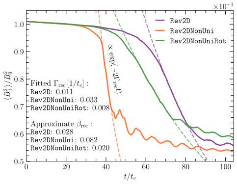
图注：Rev2D、Rev2DNonUni和Rev2DNonUniRot模拟中，计算域平均面内磁场随时间的变化表明，面内磁场重联集中在一个窄时间区间。对重联最强的时段拟合指数衰减exp(−2Γrec t)，虚线表示该拟合。近似重联速率为βrec≈(Bg/B0)(R/c)Γrec，在各模拟间约为0.02–0.1。
怎么看这张图：比较衰减启动时间与斜率：非均匀电阻加快重联，旋转则延迟过程。这里拟合的是磁能演化，不能把曲线直接当成观测射电或X射线光变。 支持正文关键证据，并与同版本原图和图注核对。
来源与置信度：arXiv HTML；source verified；https://arxiv.org/html/2610.22653v1/rec_rate.svg
4. ExHaLe-jet: Modeling blazar jets with an extended hadro-leptonic radiation code
- 来源：arXiv / astro-ph.HE
- 链接：https://arxiv.org/abs/2610.23425
- 作者：M. Zacharias, A. Zech, A. Reimer, C. Boisson
- 公告 / 来源日期：2026-10-19
- 阅读层级：相关简报
- 评分：novelty 6/10，importance 7/10，relevance 9/10，final 8.40/10
- 推荐理由：ExHaLe扩展喷流对两种再加速处方的比较，可借鉴多区轻强子输运；会议论文不能按完整机制验证评级。
中文题目：多次激波重新加速如何改变延展喷流的辐射
问题、方法与结论：ExHaLe 喷流模型把沿轴的多个区域串联，求解质子、电子及次级粒子的输运和光子、中微子产生。作者让粒子在多个激波处重新获得注入谱，比较基准、低吸积率及仅在低磁化区重新加速三种情形。基准喷流有10处加速区，光子辐射最强处靠近体运动加速末端；电子每次快速冷却，质子的沿程演化更受绝热损失影响。
意义与贡献：研究表明，延展喷流的能谱不能总由单个静态辐射区代表。降低盘光度同时改变宽线区和尘埃环的尺度与靶光子场，会使辐射从外部逆康普顿主导转向同步辐射较重要；改变加速位置则可显著削弱同步峰而较少影响伽马输出。
可借鉴之处：可借鉴的是把加速位置、磁化程度、外部光场和多普勒增强放到同一沿程模型中，而非只调整末端能谱。对多信使研究尤其有用：含有大量高能质子，并不自动意味着光致介子效率高，三种示例均未产生可观测的中微子信号。
局限与关注点：激波以重置粒子谱的参数化方式实现，未自洽求解激波动力学，也未拟合某个源的数据。输运主要沿下游，没有充分表示横向逃逸；这里只比较三种处方，连续湍流、剪切及重联加速仍待加入，不能据此排除喷流中微子源。
图1
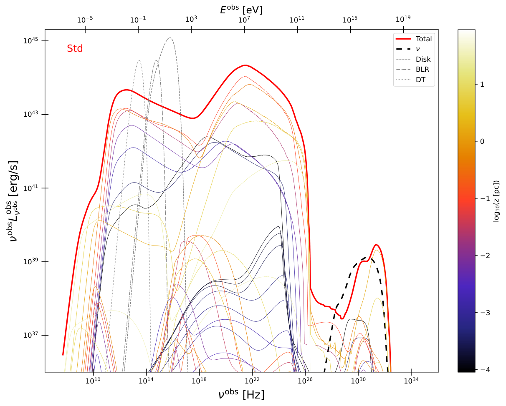
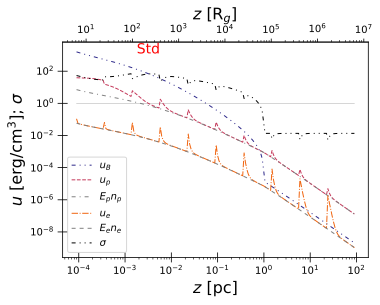
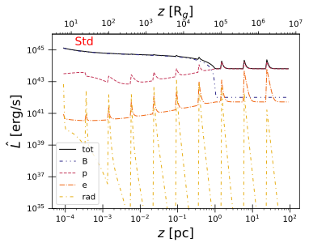
图注：Std模拟结果。左：本征谱能量分布随距离的演化以颜色编码，总谱为红粗线；黑虚线是总中微子谱，灰线是图中标注的外部光场。右上：各成分共动系能量密度及磁化程度随喷流长度的变化；右下：各成分观测者系光度的沿程演化。所有量均在相应切片计算结束时取得，因此包含冷却等效应。
怎么看这张图：把距离颜色与右侧光度峰相互对照，能看见重新加速与冷却的竞争。黑虚线即使存在也不代表可探测中微子；这组计算没有拟合具体源，也没有证明加速区位置唯一。 支持正文关键证据，并与同版本原图和图注核对。
来源与置信度：arXiv HTML；source verified；https://arxiv.org/html/2610.23425v1/260821_Gamma26_Std_SpecTotDist_paper.png；https://arxiv.org/html/2610.23425v1/260821_Gamma26_Std_para_endens.svg；https://arxiv.org/html/2610.23425v1/260821_Gamma26_Std_para_luminosity.svg
5. A Unified Solution to the Low-Mass X-ray Binary Diversity Puzzle: Saturated Magnetic Braking Coupled with Irradiation-Driven Winds
- 来源：arXiv / astro-ph.HE
- 链接：https://arxiv.org/abs/2610.22816
- 作者：Zhu-Ling Deng, Xiang-Dong Li, Bo Wang, Philipp Podsiadlowski, Yong Shao, Dong-Dong Liu, Zhan-Wen Han
- 公告 / 来源日期：2026-10-19
- 阅读层级：相关简报
- 评分：novelty 7/10，importance 8/10，relevance 7/10，final 8.35/10
- 推荐理由：饱和磁制动耦合辐照风统一比较LMXB与后继MSP分布，科学检验有价值；不先接受无微调与彻底解决的宣称。
中文题目：辐照驱动伴星风，为低质量 X 射线双星补上磁制动反馈
问题、方法与结论：作者将快速自转时饱和的磁制动，与吸积 X 射线驱动的伴星风耦合，用 MESA 演化轨迹和 BSE 形成权重比较双星种群。辐照前制动较弱，伴星可先形成氦核；开始质量转移后风增强角动量损失，再把轨道推向紧致系统。代表轨迹最终形成氦白矮星伴星，并经引力波收缩再次接触，成为超紧致 X 射线双星。
意义与贡献：这个反馈把同一辐射同时作为观测信号和演化动力因素。它比只增强所有阶段制动更有物理针对性，能在不同有效辐照效率下覆盖持续源和暂现源的吸积率，并改善毫秒脉冲星—氦白矮星轨道周期分布。
可借鉴之处：可借鉴之处是用后代种群检验吸积阶段的处方，而不只匹配少数当下光度。Eddington 光度上限会限制风增强，使反馈不无限增长；比较应同时保留初始参数覆盖、形成率及各轨迹停留时间。本文期刊版本实际已于8月28日上线，本期收录的是10月19日的新 arXiv 公告。
局限与关注点：效率参数包含辐射、遮挡和加热损失，未被直接测定，2A1822–371示例还使用较高效率。模型仍低估2–5小时周期峰并高估200–1000天系统，涉及共包层与选择效应。黑洞双星只是初步检验；PDF所引用在线补充表未独立取得，不能把所有系统的匹配称为逐项复验。
图2
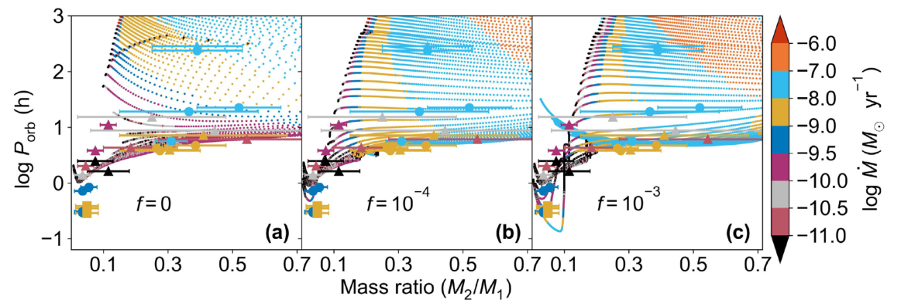
图注：SMB+IDW模型下中子星低质量X射线双星的演化轨迹。每个面板均采用初始质量1.0太阳质量的供体，辐照效率依次为f=0（a）、10⁻⁴（b）、10⁻³（c）。轨迹颜色表示质量转移率，见最右色标。带误差条的观测符号中，圆、方、三角分别代表持续LMXB、球状星团LMXB和暂现LMXB。
怎么看这张图：比较相同供体质量下辐照如何改变轨道与转移率覆盖，而非将三组效率看成独立确定的观测参数。图中改善不等于种群全部细节已解释，短周期峰和宽轨道过剩仍有张力。 直接裁切已核对的期刊/预印本PDF原图，保留所有面板与坐标。
来源与置信度：original PDF crop；source verified；https://arxiv.org/pdf/2610.22816v1#page=6
6. The Dancing Bonfire: An Unusual Persistent X-ray Source in M81 Exhibiting Recurrent Luminous Flares
- 来源：arXiv / astro-ph.HE
- 链接：https://arxiv.org/abs/2610.23339
- 作者：Jiachang Zhang, Zhiyuan Li, Xiangdong Li, Tong Bao, Ziqian Hua, ShanShan Weng
- 公告 / 来源日期：2026-10-19
- 阅读层级：相关简报
- 评分：novelty 7/10，importance 7/10，relevance 8/10，final 8.35/10
- 推荐理由：M81持续亮源重复短耀发的长期多任务证据提供新吸积不稳定案例；磁化中子星解释尚未确认。
中文题目：M81F4 的反复分钟级耀发，提示持续吸积中的磁层调制
问题、方法与结论：作者结合 Chandra、XMM-Newton、Swift 和 NuSTAR 档案，新增7次耀发，使 M81F4 的已识别事件达到21次。源在二十余年中持续维持约十的38至39次方 erg/s 的 X 射线光度，数百秒耀发叠加于亮基线上，平均复发间隔约半天、最短观测间隔6千秒。叠加光变快升慢降，未发现显著冷却尾；硬谱在约9.6 keV出现弯折。
意义与贡献：它处在经典热核爆发、超巨星快暂现源和普通黑洞暂现源都不易直接解释的区域。作者倾向磁化中子星：盘—磁层边界临时储存少部分物质后释放，主流仍持续吸积，因而能同时保持高基线和重复耀发。
可借鉴之处：方法上先按各仪器响应统一光度，再分离耀发与非耀发谱，并用人工事件评估搜寻完备性。储存质量估算只需持续吸积流的约2%–20%，为“部分泄漏”的磁层门控提供量级自洽检验，而不是要求每次完全关闭吸积。
局限与关注点：中子星性质和伴星尚未确认，磁场、自转周期均未测出；半天是事件率倒数，不是已建立的周期。约11年两次降光也不足以证明长期相干调制。光学候选有多个且可能受盘光污染；非同时谱及稀疏取样限制了解释，黑洞方案仍未被严格排除。
图1
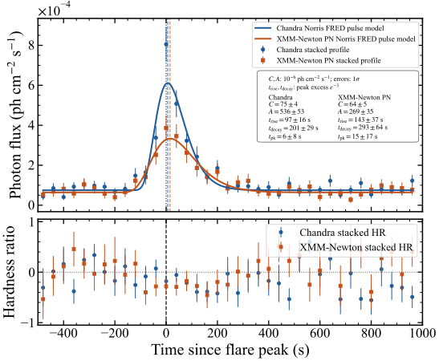
图注：上：M81F4叠加耀发轮廓。各次耀发按估计峰时对齐，将响应修正后的轮廓以均匀40秒分箱取平均。每次事件的零时刻为其耀发贝叶斯块五等分中峰值片段的中点。蓝圆为Chandra，红方为XMM-Newton；实线为快升指数衰减（FRED）模型，插图列出最佳参数。上升与衰减时间从模型峰值量到高于基线的超出降为峰值e⁻³的位置。下：对应硬度比随时间变化，耀发期间未见显著谱演化。
怎么看这张图：看快升慢降与下方硬度比，而不要把峰值对齐后的平均轮廓理解成单次事件精确形状。无显著冷却削弱经典热核解释，但光子统计有限，不能仅凭这张图确认中子星或磁层门控。 支持正文关键证据，并与同版本原图和图注核对。
来源与置信度：arXiv HTML；source verified；https://arxiv.org/html/2610.23339v1/chandra_xmm_peak_aligned_free_ts_hr_norris_fred_pn_photon_flux.svg
7. Three-dimensional spatial modelling of nuclear de-excitation lines
- 来源：arXiv / astro-ph.HE
- 链接：https://arxiv.org/abs/2610.23380
- 作者：Tomohiko Oka, Thomas Siegert, Tristan Bouchet, Laura Eisenberger, Mika A. Gelowicz, Saurabh Mittal, Rudi Reinhardt, Manuel R. H. W. Skalka
- 公告 / 来源日期：2026-10-19
- 阅读层级：相关简报
- 评分：novelty 7/10，importance 7/10，relevance 8/10，final 8.35/10
- 推荐理由：GALPROP与TALYS三维核退激发线图给出局部空间优势及线比诊断，增加MeV低能宇宙线预测。
中文题目：三维银河核退激发谱线，如何寻找低能宇宙线
问题、方法与结论：作者把 GALPROP 三维宇宙线分布、气体模板和 TALYS 核反应截面结合，计算4.4、6.1 MeV等核退激发线的全天分布，并加入可能解释银河中心高电离率的额外低能粒子分量。大范围银河脊积分时，谱线仍不足轻子连续谱约1%；空间分辨到银河中心，额外分量的某些模型却能使局部线与连续谱比超过1。
意义与贡献：新增价值是把“积分能谱太弱”转换为具有空间选择性的探测问题。6.1与4.4 MeV线比对低能粒子注入截止能量较敏感，可望与空间分布一起限制粒子来源；它不是对 COMPTEL 连续谱超出的完整解释。
可借鉴之处：值得借鉴的是同时计算传播、靶物质、核截面和轻子背景，并用本地质子谱限制额外分量归一化。不同截止能量下线比可变化约三成，但需联合考虑元素丰度和截面误差，不能将单个线比直接反演成唯一加速能量。
局限与关注点：最亮模型需要约十的43次方 erg/s注入功率，远高于标准银河宇宙线预算，供能来源尚未解决。气体金属丰度被简化，截面部分能段差异达数倍；并未折叠仪器响应与探测器背景。与 COSI 标称灵敏度相近只是前景比较，不能宣称可确认探测。
图10
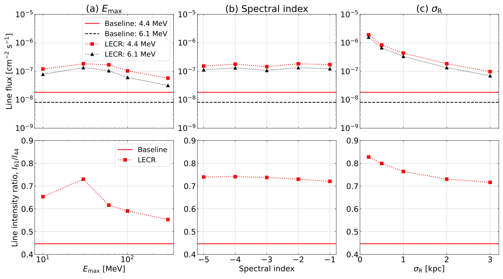
图注：银河中心半径2度范围内积分的4.4与6.1 MeV退激发线通量（上排），及相对4.4 MeV线的比值（下排）的模型依赖。(a)–(c)依次改变最大注入能量、谱指数与径向宽度σR。上排红方、黑三角分别表示含额外低能宇宙线模型的4.4、6.1 MeV线通量，红实水平线和黑虚水平线是基线模型的对应强度。下排方点为6.1/4.4 MeV线强度比，水平实线是基线模型比值。
怎么看这张图：先看下排线比对截止能量的变化，再查上排绝对通量是否接近灵敏度。图示为模型而非实测点，明亮额外分量有供能压力；截面与丰度退化也会改变比值解释。 支持正文关键证据，并与同版本原图和图注核对。
来源与置信度：arXiv HTML；source verified；https://arxiv.org/html/2610.23380v1/fig_line_intensity_ratio_model_dep.svg
8. Modeling extreme mass-ratio inspirals in astrophysical and dark-matter environments
- 来源：arXiv / astro-ph.HE
- 链接：https://arxiv.org/abs/2610.22480
- 作者：Dongjun Li, Hao-Jui Kuan, Colin Weller, Chaoyi Yang, Kelvin Ka-Ho Lam, Patrick Bourg, Adrian Ka-Wai Chung, Yanbei Chen
- 公告 / 来源日期：2026-10-19
- 阅读层级：相关简报
- 评分：novelty 8/10，importance 7/10，relevance 7/10，final 8.30/10
- 推荐理由：相对论环境扰动中同时纳入通量及保守动力学相位，揭示抵消及标量单项不足，圆赤道绝热近似须保留。
中文题目：稀薄标量云也会显著改变极端质量比旋近的引力波相位
问题、方法与结论：作者用修正 Teukolsky 方程，把环境引起的背景度规改变、物质响应和引力辐射修正一并纳入旋转黑洞附近的极端质量比旋近。示例采用同步的复标量云、圆形赤道轨道，黑洞百万太阳质量、质量比十万分之一、云质量为黑洞万分之一。两年后相对真空轨道的相位差约−57.3弧度，而只计标量通量时约−6.14弧度。
意义与贡献：关键是环境不只通过“多一个辐射通道”改变轨道：它也改变引力波通量和能量—半径关系。这些同阶效应会相互抵消或增强，不能仅凭云很稀薄，就忽略其对长期累积相位的影响。
可借鉴之处：计算上将庞大源项拆成可复用的角向投影、径向辅助量与场因子，再解带源径向方程。它提供了无需慢自转或弱场近似的环境计算路线；比较不同近似时还必须对齐初始频率和相位，并在相同经过时间下比较。
局限与关注点：结果只针对特定同步云参数和绝热圆赤道轨道，没有后绝热保守自力、一般偏心或倾斜演化。这里的弧度是轨道相位差，不能直接等同探测显著性；尚需含探测器响应、噪声及参数退化的波形分析，才能判断云能否被识别或与修正引力区分。
图3
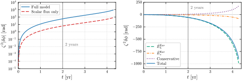
图注：圆形、赤道、绝热旋近的轨道相位差ζ²δφ=φEnv−φGR。主黑洞质量为10⁶太阳质量、质量比为10⁻⁵，其余参数同图2。左：相位差绝对值，比较联合计算（蓝实线）与仅标量通量演化（红虚线）。右：有符号的各项贡献，绿色虚线为环境引起的引力波通量修正，橙色点划线为标量通量，紫色点线为背景诱导的轨道变化，蓝实线为总和。所有演化共享真空广义相对论参考轨道在r0≈10.6M处的初始频率和相位，并在相同时间比较，直到参考轨道抵达5.1M。灰线标出两年，此时联合与仅标量结果约为−57.3和−6.14弧度。
怎么看这张图：右图显示几个同阶效应相互抵消，不能只选最大的绝对值相加。左图近十倍差异属于此参数组的轨道演化；尚未含探测器噪声和参数相关性，不能换算成发现显著性。 支持正文关键证据，并与同版本原图和图注核对。
来源与置信度：arXiv HTML；source verified；https://arxiv.org/html/2610.22480v1/orbital_dephasing_together.svg
9. Ranking Prompt--Plateau Correlations in Gamma-Ray Bursts with Symbolic Regression
- 来源：arXiv / astro-ph.HE
- 链接：https://arxiv.org/abs/2610.23155
- 作者：Fatemeh Rastegarnia, Rahim Moradi, Brwa Shukur Ismael, Mohsen Asaadi, Yu Wang
- 公告 / 来源日期：2026-10-19
- 阅读层级：相关简报
- 评分：novelty 6/10，importance 7/10，relevance 8/10，final 8.05/10
- 推荐理由：251GRB符号回归比较提示prompt—plateau联合关系，考虑距离依赖但受多重搜索和选择效应约束。
中文题目：符号回归重找伽马暴瞬时辐射—平台关系，但尚非新定律
问题、方法与结论：作者在251个有红移和平台参数的伽马暴中搜索377种最多三变量组合；含完整瞬时峰值及误差的拟合使用246个。符号回归反复选中瞬时峰值光度与平台终止时间，误差变量拟合给出相应斜率约0.773和−0.808，内禀散布约0.512 dex。去除共同光度距离趋势后关系仍存在，但解释方差从约0.824降到0.622。
意义与贡献：价值是用统一搜索比较已知 Dainotti 关系及其三维扩展，显示只看平台时间会丢失瞬时辐射的信息。这主要是对已知关系结构的再发现与诊断，不能因为使用机器学习就称为新的能量守恒定律。
可借鉴之处：作者区分了结构搜索、带测量误差的系数拟合与距离控制。100次重复划分支持所选关系的相对排序；随机打乱平台光度的受限空检验未复现真实性能，但只测试前五组变量，且有限模拟的修正概率约0.01，不是无限高显著性。
局限与关注点：同一验证集用于筛选和最终报告，指标存在选择偏乐观；重复划分没有重跑完整搜索，不是嵌套验证。线性去距离趋势也未校正通量截断与宇宙学演化。平台能量与峰值光度的比值仍随时标变化，不能据此确认磁星、回落吸积或统一转换效率。
图4
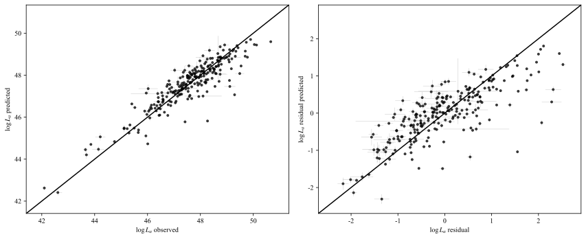
图注：显式瞬时辐射—平台平面拟合所预测的平台光度与观测值比较。左：原始平面预测，均方根误差约0.535，决定系数约0.824。右：控制距离后的预测，均方根误差约0.569，决定系数约0.622。去除共同光度距离标度后，三参数平面仍可辨认，但散布增大。横误差条为目录中平台对数光度的误差；纵误差条为瞬时峰值对数光度与平台终止时间误差经过拟合平面传播后的误差。
怎么看这张图：右图保留趋势说明共享距离并非唯一原因，但它未校正通量截断和光度演化。此图也不是独立新样本的预测检验；结构搜索和验证集复用的选择效应仍需单独处理。 支持正文关键证据，并与同版本原图和图注核对。
来源与置信度：arXiv HTML；source verified；https://arxiv.org/html/2610.23155v1/GRB_prompt_plateau_plane_predicted_vs_observed_revised.svg
10. Maximal efficiency of geometric beaming and polarization of highly super-Eddington X-ray sources
- 来源：arXiv / astro-ph.HE
- 链接：https://arxiv.org/abs/2610.23089
- 作者：Varpu Ahlberg, Alexandra Veledina, Eugene Churazov, Ildar Khabibullin
- 公告 / 来源日期：2026-10-19
- 阅读层级：相关简报
- 评分：novelty 7/10，importance 7/10，relevance 7/10，final 8.00/10
- 推荐理由：偏振蒙特卡洛给出漏斗几何聚束效率极限，可检验超爱丁顿解释；理想几何限制外推。
中文题目：狭窄吸积漏斗的几何增亮，为何达不到简单立体角上限
问题、方法与结论：作者以每组六千万光子包进行蒙特卡洛输运，比较完全保守的热再发射与电子散射漏斗，并计算偏振。即使壁面无限光学厚，光子也可经过多次反射到达顶部，从大倾角逸出，因此狭窄开口的增亮远低于简单立体角估计。10度漏斗即使长度达底部半径十万倍，增亮仍只有理想上限约四成。
意义与贡献：这说明用开口立体角直接把超亮 X 射线源的视向光度换成真实光度，可能高估几何束射效率。普通参数下增亮多为十倍量级；超过百倍需要极窄或极长漏斗，或额外的相对论喷流等机制。
可借鉴之处：可借鉴的是正确使用表面投影后的出射角分布，并联合亮度与偏振诊断几何变化。偏向正面观察时，改变开口角与进动改变倾角可产生不同的亮度—偏振相关方向；但真实光度若同时变化，就不能单独凭相关符号判定几何。
局限与关注点：这里是能量无关、保守输运、点状入射源和简化锥台壁面模型，忽略反冲损失及有限光学厚泄漏，因此更像有利条件下的上限。腔内高速散射流可能额外准直，未被模拟；对小红点群体的推论也依赖其本来就是超临界吸积源的假设。
图4
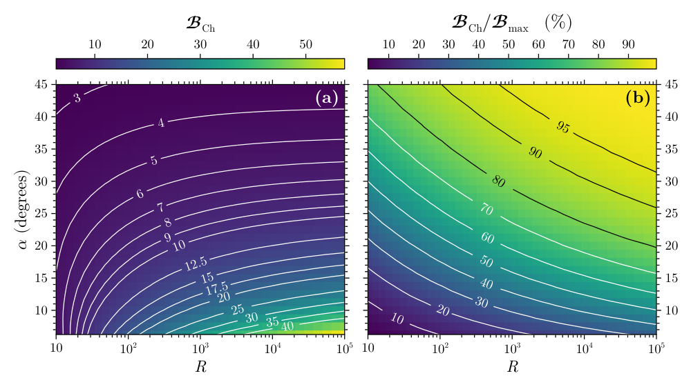
图注：按Chandrasekhar电子散射大气解反射的漏斗，其增亮因子BCh随长度R和角α变化。(a)在倾角i≤α内平均的增亮因子；(b)该增亮与几何最大值Bmax=(1−cosα)⁻¹之比。
怎么看这张图：两面板要联读：开口越窄可提高绝对增亮，却未必更接近理想上限。光子到达漏斗顶部后能向侧面逃逸；这些结果仍假设保守输运和无限光学厚壁面。 支持正文关键证据，并与同版本原图和图注核对。
来源与置信度：arXiv HTML；source verified；https://arxiv.org/html/2610.23089v1/boost_R_alpha.png
11. A New AI/ML Based Image Reconstruction Technique for Hard X-ray Coded Aperture Imagers
- 来源：arXiv / astro-ph.HE
- 链接：https://arxiv.org/abs/2610.22709
- 作者：Shayla Sharmin, Branden Allen
- 公告 / 来源日期：2026-10-19
- 阅读层级：相关简报
- 评分：novelty 7/10，importance 6/10，relevance 8/10，final 8.00/10
- 推荐理由：BAT模拟直接定位网络具有实际方法潜力，但限制在训练计数与部分视场，尚无在轨复杂背景验证。
中文题目：以卷积与注意力重建 Swift/BAT 低计数编码孔径图像
问题、方法与结论：作者用官方 BAT 掩模工具生成蟹状星云附近±20度范围的模拟探测器图，以卷积网络和 Transformer 学习重建天空峰。训练覆盖6561个网格位置，随后加入不同强度的均匀泊松背景。背景增强训练后，无背景400个源计数的定位成功率超过93%；900个源计数并叠加7500个背景计数时仍约95%。
意义与贡献：它说明低计数编码孔径图像中的空间结构可被紧凑模型利用，有望帮助快速定位弱暂现信号。注意力模块的收益在400计数时明显高于900计数时，支持其主要帮助稀疏信息整合，而不是所有信号强度下都同样有效。
可借鉴之处：值得借鉴的是从仪器前向模拟出发，独立改变源与背景计数，并保留去掉注意力的消融比较。约620万参数的模型在测试 CPU 上单张约0.25秒，为实现成本提供参考；重建峰值使用固定目标标度，不能直接解释为物理通量。
局限与关注点：训练与验证共享位置网格，主要验证新噪声实现而非新天空几何；尚未覆盖完整视场、多源混叠和真实结构化背景。当测试使用训练中未见的13000个背景计数时成功率降至约67%，说明外推明显退化。本文未给出真实告警误报率或在轨硬件测试，不能声称已适用于卫星触发。
图9
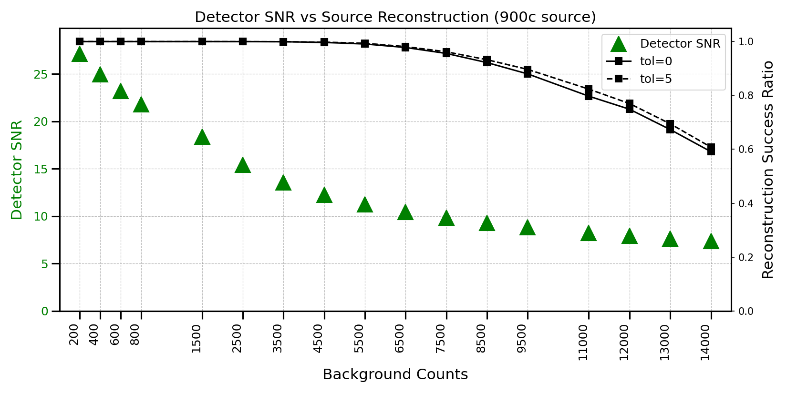
图注：经过背景训练后，在探测器信噪比逐渐降低的条件下的性能。
怎么看这张图：这是模拟重建的性能曲线，不能当作真实告警完备性。训练背景范围内表现良好，但更高背景的外推下降；还需真实非均匀背景、多源混叠与误报率检验。 支持正文关键证据，并与同版本原图和图注核对。
来源与置信度：arXiv HTML；source verified；https://arxiv.org/html/2610.22709v1/figs/NEW_SNR.png
12. Seeing Through the RFI Mask: DT-FISTA Inpainting of Pulsar Dynamic Spectra via Fourier Sparsity
- 来源：arXiv / astro-ph.HE
- 链接：https://arxiv.org/abs/2610.23140
- 作者：Yuanshang Huang, Xun Shi
- 公告 / 来源日期：2026-10-19
- 阅读层级：相关简报
- 评分：novelty 7/10，importance 7/10，relevance 7/10，final 8.00/10
- 推荐理由：FFT稀疏反演显著节约脉冲星动态谱插值成本并在FAST数据展示暗弧恢复，需保留稀疏假设及基准范围。
中文题目：用递减阈值稀疏重建，减轻脉冲星闪烁谱的射频干扰缺口
问题、方法与结论：射频干扰剔除后的缺口会在二维傅里叶功率谱中产生泄漏，掩盖弱闪烁弧。DT-FISTA 从强傅里叶分量开始，逐渐降低软阈值、回填缺失像素，并每轮恢复保留像素原值。对两个 FAST 脉冲星的300×300像素测试块，缺口重建归一化误差由密集 Wiener 方法的0.297、0.363降到0.188、0.169。
意义与贡献：每轮只需快速傅里叶变换及逐像素操作，使数百万像素的完整动态谱处理可行。测试块约1.7秒、0.015 GiB，相比本文使用的密集协方差实现大幅省时省内存；这一比较不能推广成优于所有优化过的 Wiener 算法。
可借鉴之处：方法价值在于把观测一致性和稀疏先验分开：已有像素保持原值，缺口由集中在少量傅里叶分量中的结构约束。人工遮罩提供误差真值，39个不重叠测试块还显示傅里叶结构越集中，回填通常越准确。
局限与关注点：真实干扰遮罩内没有真值，完整观测只证明视觉泄漏改善；已有像素的噪声和未标记干扰也会保留。大连续缺口、弥散功率和边界去窗会影响恢复；递减阈值及操作顺序不同于标准 FISTA，不能直接套用其固定目标收敛保证，更不能把回填结构当独立新信号。
图1
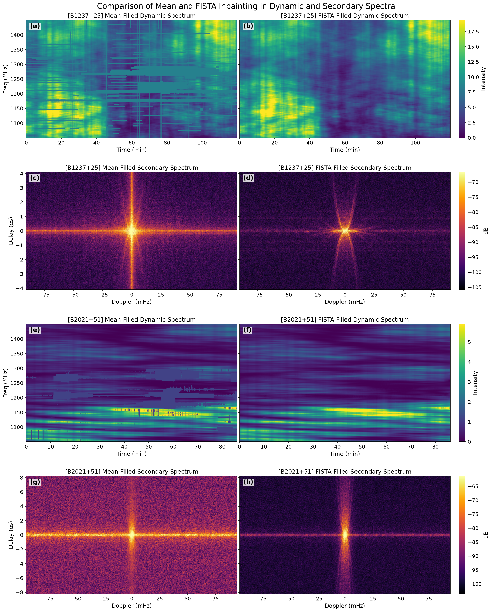
图注：完整分辨率下的缺口回填抑制了次级谱中由遮罩造成的泄漏，使微弱闪烁弧更清楚。图示PSR B1237+25和PSR B2021+51的动态谱与次级谱，左侧采用均值回填，右侧采用DT-FISTA。次级谱功率以分贝表示，将零时延、零多普勒（直流）处功率归一化为0 dB。
怎么看这张图：比较弱弧旁的水平、垂直泄漏，而非只看图像是否更平滑。真实干扰缺口内无真值，图1是可视性检验；重建误差必须结合人工遮罩实验判断。 支持正文关键证据，并与同版本原图和图注核对。
来源与置信度：arXiv HTML；source verified；https://arxiv.org/html/2610.23140v1/fullsize_mean_vs_fista.png
13. Clustering of JWST LRDs. Implications for PBHs and other early-forming seeds
- 来源：arXiv / astro-ph.HE
- 链接：https://arxiv.org/abs/2610.23806
- 作者：Gert Hütsi
- 公告 / 来源日期：2026-10-19
- 阅读层级：相关简报
- 评分：novelty 7/10，importance 7/10，relevance 7/10，final 8.00/10
- 推荐理由：LRD丰度加聚类排除随机激活的次主导PBH种子情形，明确宿主耦合逃逸条件，属于有用机制约束。
中文题目：小红点的聚类限制了哪些原初黑洞解释？
问题、方法与结论：作者结合红移4–8的小红点数密度与大尺度偏置，对比普通暗物质晕占据模型和稀少原初黑洞种子。前者用质量门槛控制聚类、用点亮比例控制丰度，可覆盖文献偏置约3–8。若原初种子最初呈泊松分布、对总物质动力学可忽略且随机点亮，扣除散粒噪声后的偏置接近1，与所采用的较强聚类范围不符。
意义与贡献：贡献在于把“种子数量够不够”和“发光对象位于哪里”分开。仅调整一个与环境无关的占空比会改变数量及散粒噪声，却不会把偏置从1提高到大质量晕的水平；因此丰度自洽不等于聚类自洽。
可借鉴之处：可借鉴的是同时分析自功率、与物质的交叉功率和噪声扣除。稀疏群体的低交叉相关系数可能只是散粒噪声主导，不能自动解释成特殊初始涨落；真正应比较的是相同定义、相同尺度下的偏置。
局限与关注点：当前聚类测量之间仍有分歧，采用的3–8只是代表范围，并非精确红移演化。如果只有大质量晕中的原初种子能有效吸积，发光群体就继承宿主聚类，本方法无法区分其种子起源。文中 Fisher 灵敏度是调查预测，不是新增观测排除显著性。
图4
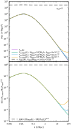
图注：红移z=5时的功率谱，三组原初黑洞质量与质量分数均选为复现约4×10⁻⁵ h³ Mpc⁻³的数密度。上：总物质功率谱（紫）、物质—原初黑洞交叉谱（绿、蓝、橙）及原初黑洞自谱（虚线）。自谱由泊松噪声主导，原初黑洞对总物质谱影响可忽略。下：物质—原初黑洞交叉相关系数r（实线）和扣除泊松噪声后的偏置（虚线）。扣除散粒噪声后偏置约1，即原初黑洞是不带偏置的绝热密度场示踪物。r较低反映泊松噪声主导，近似为[nP/(1+nP)]的平方根；等曲率贡献仅在最大质量原初黑洞的小尺度上翘处可见。
怎么看这张图：读下图时区分低相关系数和低偏置，两者不是同一概念。结论针对稀少、初始泊松且随机激活的种子；若激活概率依赖宿主质量，亮源聚类会继承宿主，图示不能排除其原初起源。 支持正文关键证据，并与同版本原图和图注核对。
来源与置信度：arXiv HTML；source verified；https://arxiv.org/html/2610.23806v1/Pk_pbh_etc.svg
说明
评分由 LLM 给出初评，再由本地阈值策略过滤；IACT、TeV 伽马射线和高能中微子天文学按重点方向处理。